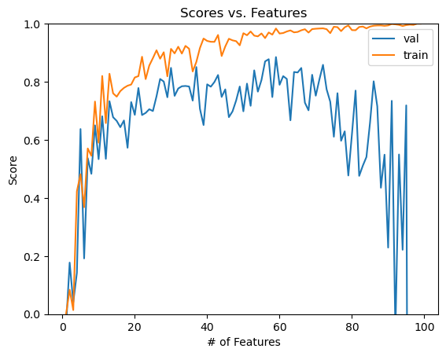

import numpy as np
import pandas as pd
import seaborn as sns
from matplotlib import pyplot as plt
from sklearn.datasets import make_blobs
from linearRegression import LinearRegressionThe implementation of Linear Regression could be found here: https://github.com/Hedavam/Hedavam.github.io/blob/main/posts/Optimization%20for%20Logistic%20Regression/lr.py
Overview of Linear Regression
Linear regresion predicts a dependent value based on explanatory variables. In a machine learning context, we will predict a number using a variety of features.
Least-Squares Linear Regression
Since we have a linear model, our predictions will be linear: \(\hat{y}_i = \langle \mathbf{w}, \mathbf{x}_i \rangle\)
The loss function we will use for our implementation of linear regression is the squared loss: \(\ell(\hat{y}, y) = (\hat{y} - y)^2\)
To obtain our desired parameter vector (weights and bias), we want to minimize the emprirical risk of our training model as shown below:
\[\begin{aligned} \hat{\mathbf{w}} &= \mathop{\mathrm{arg\,min}}_{\mathbf{w}} \; L(\mathbf{w}) \\ &= \sum_{i = 1}^n \ell(\hat{y}_i, y_i) \\ &= \mathop{\mathrm{arg\,min}}_{\mathbf{w}} \sum_{i = 1}^n \left(\langle \mathbf{w}, \mathbf{x}_i \rangle - y_i \right)^2\;. \end{aligned}\]The equation takes the following form in matrix-vector notation:
\[\begin{aligned} \hat{\mathbf{w}} = \mathop{\mathrm{arg\,min}}_{\mathbf{w}} \; L(\mathbf{w}) = \mathop{\mathrm{arg\,min}}_{\mathbf{w}} \; \lVert \mathbf{X}\mathbf{w}- \mathbf{y} \rVert_2^2\;. \end{aligned}\]Since squared loss is a convex function, we are guaranteed to find any local minimum, which will be the global minimum by the definition of convexity.
By the definition of convexity, this minimum is located at the point where the empirical risk function’s gradient is 0.
Analytic Approach
If we set the gradient to 0, we can solve our risk minimization formula explicitly for our parameter vector, as long as our feature matrix has as many rows (samples) as it has columns (features).
Step-by-step process to this is outlined here: https://middlebury-csci-0451.github.io/CSCI-0451/lecture-notes/regression.html#solution-methods
Gradient Descent Approach
Our gradient represents our descent direction. To do gradient descent, we iteratively calculate the gradient and adjust our parameter vector accordingly (param. vector - learning rate * grad). Thus, every iteration we move in descent direction until our algorithm converges (gradient = 0). The learning rate hyperparameter controls the speed of our descent.
For more info on gradient descent, reference this previous blog post: Optimization with Gradient Descent Blog Post
#This function helps modify our given feature array by adding column of 1's
def pad(X):
return np.append(X, np.ones((X.shape[0], 1)), 1)
#This function will create both testing and validation data
def LR_data(n_train = 100, n_val = 100, p_features = 1, noise = 1, w = None):
if w is None:
w = np.random.rand(p_features + 1) + .2
X_train = np.random.rand(n_train, p_features)
y_train = pad(X_train)@w + noise*np.random.randn(n_train)
X_val = np.random.rand(n_val, p_features)
y_val = pad(X_val)@w + noise*np.random.randn(n_val)
return X_train, y_train, X_val, y_val#choose # of samples and features
n_train = 100
n_val = 100
p_features = 1
#adjusts variability of the data
noise = 0.05
#create some data
X_train, y_train, X_val, y_val = LR_data(n_train, n_val, p_features, noise)#create instance of our LinearRegression class
weight = 0
score_history = []
lr = LinearRegression(weight, score_history)lr.fit_gradient(X_train, y_train, alpha = 0.095, max_epochs = 2000)
print("with a parameter vector of " + str(lr.w)) # inspect the fitted value of w
print("Algorithm converged after " + str(len(lr.score_history)) + " iterations")
lr.fit_analytic(X_train, y_train)
print("\nAnalytic approach obtains a parameter vector of " + str(lr.w))Gradient approach conveged
with a parameter vector of [0.50246422 0.23658076]
Algorithm converged after 1232 iterations
Analytic approach obtains a parameter vector of [0.5024643 0.23658072]Both linear regression fit methods produce a nearly identical parameter vector.
print(f"Training score = {lr.score(X_train, y_train).round(4)}")
print(f"Validation score = {lr.score(X_val, y_val).round(4)}")Training score = 0.6637
Validation score = 0.6797#Visualize the data and linear regression fits
fig, axarr = plt.subplots(1, 2, sharex = True, sharey = True)
axarr[0].scatter(X_train, y_train)
axarr[1].scatter((X_val), y_val)
#pad for graphing
def pad(X):
return np.append(X, np.ones((X.shape[0], 1)), 1)
axarr[0].plot(pad(X_train)[:,0], pad(X_train)@lr.w, color = "black") #[:,0]gives 1st column vs. print(X_train[0]) #gives 1st enxtry
axarr[1].plot(pad(X_val)[:,0], pad(X_val)@lr.w, color = "black")
labs = axarr[0].set(title = "Training", xlabel = "Feature (x)", ylabel = "Target (y)")
labs = axarr[1].set(title = "Validation", xlabel = "Feature (x)", ylabel = "Target (y)")
plt.tight_layout()Model does a good job on both the training and validation data.
plt.plot(lr.score_history)
plt.ylim([0, 1])
labels = plt.gca().set(title = "Score vs. Iterations", xlabel = "# of Iterations", ylabel = "Score")
Our chosen measure to score our model is the coefficient of determination, with 1 represnting perfect predictive accuracy. Score may be negative for bad models.
Experiments
#choose # of samples and features
n_train = 100
n_val = 100
p_features = 1
#adjusts variability of the data
noise = 0.5
#initialize arrays to store scores
train_score_hist = []
val_score_hist = []
# create some data
X_train, y_train, X_val, y_val = LR_data(n_train, n_val, p_features, noise)
#Record the score on training and validation as the #features increases
for i in range(n_train-1):
X_train, y_train, X_val, y_val = LR_data(n_train, n_val, i, noise) #create data; #i is the p_features
lr.fit_analytic(X_train, y_train) #fit
train_score_hist.append(lr.score(X_train, y_train)) #update model's training score
val_score_hist.append((lr.score(X_val, y_val))) #update model's validation score
#Graph it
num_steps = len(val_score_hist)
plt.plot(np.arange(num_steps) + 1, val_score_hist, label = "val")
num_steps = len(train_score_hist)
plt.plot(np.arange(num_steps) + 1, train_score_hist, label = "train")
plt.ylim([0, 1])
labels = plt.gca().set(title = "Scores vs. Features", xlabel = "# of Features", ylabel = "Score")

Take-away: After a certain number of features (about 50) our model starts to overfit, meaning it learns too much about the intricacies of the training data and fails to generalize on validation data. Hence, the increasing discrepancey between scores on training and validation data observed.
LASSO Regularization
LASSO adds a regularization term to our parameter vector, which shrinks the parameter vector’s weights associated with less important features (even to 0), which helps combat overfitting as our number of features increases. This may be used for feature selection and is useful when we have more features than samples (overparameterized problems).
#choose # of samples and features
n_train = 100
n_val = 100
p_features = n_train - 1
#adjusts variability of the data
noise = 0.5
from sklearn.linear_model import Lasso
L = Lasso(alpha = 0.001)
L2 = Lasso(alpha = 0.00001)
L3 = Lasso(alpha = 0.1)
lasso_score_hist = []
lasso_lil_score_hist = []
lasso_big_score_hist = []
val_score_hist = []
#i is the p_features
for i in range(1, (n_train-1)+ 50):
X_train, y_train, X_val, y_val = LR_data(n_train, n_val, i, noise) #Create Data; i is number of features
L.fit(X_train, y_train)
lasso_score_hist.append((L.score(X_val, y_val)))
L2.fit(X_train, y_train)
lasso_lil_score_hist.append((L2.score(X_val, y_val)))
L3.fit(X_train, y_train)
lasso_big_score_hist.append((L3.score(X_val, y_val)))
lr.fit_analytic(X_train, y_train) #fit
val_score_hist.append((lr.score(X_val, y_val))) #update model's validation score
#Graph it
fig, axarr = plt.subplots(1, 2, figsize=(15,5), sharex = False, sharey = False)
num_steps = len(lasso_score_hist)
axarr[0].plot(np.arange(num_steps) + 1, lasso_score_hist, label = "with lasso")
axarr[0].plot(np.arange(num_steps) + 1, val_score_hist, label = "without lasso")
axarr[1].plot(np.arange(num_steps) + 1, lasso_score_hist, label = "with lasso")
axarr[1].plot(np.arange(num_steps) + 1, val_score_hist, label = "without lasso")
axarr[0].axis(ymin=0,ymax=1)
labs = axarr[0].set(title = "Validation Score (0-1) vs. Features", xlabel = "# of Features", ylabel = "Validation Score")
labs = axarr[1].set(title = "Validation Score (unregulated) vs. Features", xlabel = "# of Features", ylabel = "Validation Score")
legend = axarr[0].legend()
legend = axarr[1].legend()
#ignore warnings for cleaner output
import warnings
warnings.filterwarnings('ignore')
Take-away: LASSO Regularization has improved perfomance for overparametrized problems
Our linear regression implementation matches up well with Sklearn’s LASSO up until the number of features gets close to the number of samples, at which point the validation score of our non-regularized model plummets while LASSO’s validation score stays above 0.
num_steps = len(lasso_score_hist)
plt.plot(np.arange(num_steps) + 1, lasso_score_hist, label = "alpha = 0.001")
plt.plot(np.arange(num_steps) + 1, lasso_lil_score_hist, label = "alpha = 0.00001")
plt.plot(np.arange(num_steps) + 1, lasso_big_score_hist, label = "alpha = 0.1")
plt.ylim([0,1])
labels = plt.gca().set(title = "Scores vs. Features", xlabel = "# of Features", ylabel = "Score")
legend = plt.legend()Take-away: Large learning rates (alphas) negatively affect Sklearn’s LASSO Regularization algorithm’s perfomance while small ones don’t have much of an effect on its perfomance (likely the algorithm is ran for more iterations to balance this out)
Linear Regression + Experiments on Bikeshare Data Set
The following experiments will be perfomed on a dataset related to the Capital Bikeshare system in Washington DC.
We will try to use our model to predict the number of casual riders (target vector) on a given day based on the features (like temperature or month) in our data that impact it.
Import Data
import pandas as pd
from sklearn.model_selection import train_test_split
bikeshare = pd.read_csv("https://philchodrow.github.io/PIC16A/datasets/Bike-Sharing-Dataset/day.csv")
bikeshare.head()| instant | dteday | season | yr | mnth | holiday | weekday | workingday | weathersit | temp | atemp | hum | windspeed | casual | registered | cnt | |
|---|---|---|---|---|---|---|---|---|---|---|---|---|---|---|---|---|
| 0 | 1 | 2011-01-01 | 1 | 0 | 1 | 0 | 6 | 0 | 2 | 0.344167 | 0.363625 | 0.805833 | 0.160446 | 331 | 654 | 985 |
| 1 | 2 | 2011-01-02 | 1 | 0 | 1 | 0 | 0 | 0 | 2 | 0.363478 | 0.353739 | 0.696087 | 0.248539 | 131 | 670 | 801 |
| 2 | 3 | 2011-01-03 | 1 | 0 | 1 | 0 | 1 | 1 | 1 | 0.196364 | 0.189405 | 0.437273 | 0.248309 | 120 | 1229 | 1349 |
| 3 | 4 | 2011-01-04 | 1 | 0 | 1 | 0 | 2 | 1 | 1 | 0.200000 | 0.212122 | 0.590435 | 0.160296 | 108 | 1454 | 1562 |
| 4 | 5 | 2011-01-05 | 1 | 0 | 1 | 0 | 3 | 1 | 1 | 0.226957 | 0.229270 | 0.436957 | 0.186900 | 82 | 1518 | 1600 |
Visualize Data
# import datetime
fig, ax = plt.subplots(1, figsize = (7, 3))
ax.plot(pd.to_datetime(bikeshare['dteday']), bikeshare['casual'])
ax.set(xlabel = "Day", ylabel = "# of casual users")
l = plt.tight_layout()
Feature-engineering
cols = ["casual",
"mnth",
"weathersit",
"workingday",
"yr",
"temp",
"hum",
"windspeed",
"holiday"]
bikeshare = bikeshare[cols]
bikeshare = pd.get_dummies(bikeshare, columns = ['mnth'], drop_first = "if_binary")
bikeshare.head(5)| casual | weathersit | workingday | yr | temp | hum | windspeed | holiday | mnth_2 | mnth_3 | mnth_4 | mnth_5 | mnth_6 | mnth_7 | mnth_8 | mnth_9 | mnth_10 | mnth_11 | mnth_12 | |
|---|---|---|---|---|---|---|---|---|---|---|---|---|---|---|---|---|---|---|---|
| 0 | 331 | 2 | 0 | 0 | 0.344167 | 0.805833 | 0.160446 | 0 | 0 | 0 | 0 | 0 | 0 | 0 | 0 | 0 | 0 | 0 | 0 |
| 1 | 131 | 2 | 0 | 0 | 0.363478 | 0.696087 | 0.248539 | 0 | 0 | 0 | 0 | 0 | 0 | 0 | 0 | 0 | 0 | 0 | 0 |
| 2 | 120 | 1 | 1 | 0 | 0.196364 | 0.437273 | 0.248309 | 0 | 0 | 0 | 0 | 0 | 0 | 0 | 0 | 0 | 0 | 0 | 0 |
| 3 | 108 | 1 | 1 | 0 | 0.200000 | 0.590435 | 0.160296 | 0 | 0 | 0 | 0 | 0 | 0 | 0 | 0 | 0 | 0 | 0 | 0 |
| 4 | 82 | 1 | 1 | 0 | 0.226957 | 0.436957 | 0.186900 | 0 | 0 | 0 | 0 | 0 | 0 | 0 | 0 | 0 | 0 | 0 | 0 |
train, test = train_test_split(bikeshare, test_size = .2, shuffle = False)
X_train_bike = train.drop(["casual"], axis = 1)
y_train_bike = train["casual"]
X_test_bike = test.drop(["casual"], axis = 1)
y_test_bike = test["casual"]
#normalize data; comes in handy when interpreting our model's coefficients
from sklearn.preprocessing import StandardScaler
sc = StandardScaler()
normalized_X_train_bike = sc.fit_transform(X_train_bike)
normalized_train = sc.fit_transform(train)Model Training + Perfomance
lr_bike = LinearRegression(weight, score_history)
lr_bike.fit_gradient(normalized_X_train_bike, y_train_bike, alpha = 0.095, max_epochs = 2000)
plt.plot(lr_bike.score_history)
plt.ylim([0, 1])
labels = plt.gca().set(title = "Score vs. Iterations", xlabel = "# of Iterations", ylabel = "Score")
Our model does a decent job of predicting the number of casual bikers on a given day as we reach an accuracy of approximately 70%.
predictions = lr_bike.predict(normalized_X_train_bike)
actual = y_train_bike
difference = np.subtract(actual, predictions)
x_axis_1 = np.linspace(0, 3000, num = 3000)
x_axis_2 = np.linspace(0, 3000, num = 3000)
#length of predictions and actual are the same
x_axis_3 = np.linspace(0, actual.shape[0], actual.shape[0])
fig, axarr = plt.subplots(1, 3, figsize=(15,5), sharex = False, sharey = False)
#plot actual vs. prediction + paramater line
axarr[0].scatter(x = predictions, y = actual)
axarr[0].plot(x_axis_1, x_axis_2, color = "black")
axarr[0].axis(xmin=0,ymin=0)
#prediction vs. actual (superimposed)
axarr[1].scatter(x = x_axis_3, y = actual, label = "Actual")
axarr[1].scatter(x = x_axis_3, y = predictions, label = "Predicted")
axarr[1].axis(xmin=0,ymin=0)
legend = axarr[1].legend()
#plot the difference
# axarr[2].scatter(x = predictions, y = difference)
sns.regplot(x = predictions, y = difference, lowess=True, line_kws=dict(color="r"))
axarr[2].axhline(y = 0, color = 'black', linestyle = '-')
axarr[2].axis(xmin=0)
labs = axarr[0].set(title = "Actual vs. Predicted", xlabel = "# Predicted Casual Bikers", ylabel = "# Actual Bikers")
labs = axarr[1].set(title = "Daily Predicted vs. Actual (superimposed)", xlabel = "Days", ylabel = "# Casual Bikers") #add legend
labs = axarr[2].set(title = "Residual Plot", xlabel = "# Predicted Casual Bikers", ylabel = "Actual-Predicted # bikers")Visualization 1:
Ideally, the predictions would match the actual values. So, points close to the y = x line represent better predictions. Notably, our model underpredicts casual ridership when the number of actual casual bikers is high (points above the line meaning actual > predicted). Nonetheless, the model depicts a moderately strong positive correlation between predicted ridership and actual ridership.
Visualization 2:
The issue of underestimating is more apparent here, as we underpredict the ridership peaks that happen at around 200 and 550 days (mid-year for both years). Apart from the inaccurate predictions at these peaks, our model does well on most days.
Visualization 3:
Ideally, the predictions would match the actual values (actual-predicted = 0). So, points close to the y = 0 line represent better predictions.
Once again, our residual plot illustrates our issues of underpredicting on days with lots of ridership (actual-predicted > 0). When we predict moderate ridership values, we end up slighly overpredicting (actual - ridership < 0).
NOTE: Our model also predicts negative ridership, which is an impossibility considering the context of this problem. This is due to the nature of linear regression. We have negative weights in our parameter vector, so for a certain combination of features, we may compute negative predictions.
Analysis of Feature Importance
Coefficients
NOTE: Scale can impact coefficients, so we used normalized training data to fit our model earlier.
https://scikit-learn.org/stable/auto_examples/inspection/plot_linear_model_coefficient_interpretation.html# https://inria.github.io/scikit-learn-mooc/python_scripts/dev_features_importance.html#linear-model-inspection
Weights in our parameter vector with positive coefficients usually suggest that their corresponding features positively impact our predictions of ridership.
print("Features: " + str(X_train_bike.columns))
np.set_printoptions(suppress=True)
mod_lr_bike = lr_bike.w[:-1] #take out last column because it's the bias? yea
print("Weights: " + str(mod_lr_bike))Features: Index(['weathersit', 'workingday', 'yr', 'temp', 'hum', 'windspeed', 'holiday',
'mnth_2', 'mnth_3', 'mnth_4', 'mnth_5', 'mnth_6', 'mnth_7', 'mnth_8',
'mnth_9', 'mnth_10', 'mnth_11', 'mnth_12'],
dtype='object')
Weights: [ -59.20691376 -367.77442788 135.83853919 281.96835486 -72.43243238
-94.59871821 -38.50448515 -0.99555888 113.75336621 157.39845085
165.51457085 109.54785611 70.50625913 58.78512195 82.00973003
98.10888815 55.72477025 20.36188519]sorted_ascend_params = np.argsort(mod_lr_bike) #Returns the indices that would sort an array in ascending order
sorted_descend_params = list(reversed(sorted_ascend_params))
print("Top 5 features that contribute the most to increased ridership as determined by our model:")
print(X_train_bike.columns[sorted_descend_params[:5]])Top 5 features that contribute the most to ridership as determined by our model:
Index(['temp', 'mnth_5', 'mnth_4', 'yr', 'mnth_3'], dtype='object')Warmer weather and summer months are big contributors to predicted ridership, which makes sense intuitively and coincides with the peaks we see in Vizualization 2.